01Đà Nẵng · Huế
Sanft ankommen
Flughafenabholung · Fahrt zum Hotel · Hilfe bei der SIM-Karte · Unsere besten Essens- und Biertipps
Preis auf Anfrage
Jetzt anfragen
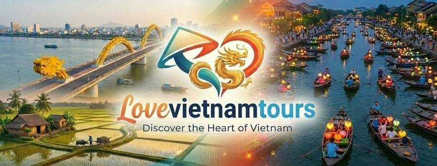
Private Tagestouren, versteckte Orte, Flughafenabholung, Hotels und Visa-Run in Đà Nẵng, Hội An und Huế. Persönlich geplant, auf Deutsch, Englisch, Ungarisch oder Spanisch.
Über ein Jahr vor Ort. Wir empfehlen nur, was wir mit eigenen Augen gesehen haben.
Kriszti und Rizzy antworten persönlich, auf Deutsch, Englisch, Ungarisch oder Spanisch.
Wir sagen euch, welche Touren sich lohnen und welche ihr euch sparen könnt.
Sucht euch eins aus, nennt uns eure Reisedaten, und wir stellen es für euch zusammen.
Flughafenabholung · Fahrt zum Hotel · Hilfe bei der SIM-Karte · Unsere besten Essens- und Biertipps
Marmorberge · Lady Buddha · Strand Mỹ Khê · abends Drachenbrücken-Show
Korbboot im Kokoswald · Laternen-Workshop · Laternenboot mit Wunschlaterne · Memories Show
Heritage Train ab Đà Nẵng · Kaiserstadt · Königsgräber · Drachenboot-Dinner in Königsgewändern
3 Ziele nach Wahl: Reisfelder · Lotusteiche · versteckte Seen · der verlassene Wasserpark · Simple Beach
Lokale Märkte · gutes, günstiges Seafood · unsere liebsten Bier-Spots · Live-Musik
Internationales Feuerwerksfestival Đà Nẵng · ein guter Platz zum Zuschauen · Abendessen vor der Show
Hội An in einer Laternennacht · Laternenboot mit Wunschlaterne · Altstadt bei Nacht
Preise pro Person, nah an dem, was ihr auf den großen Plattformen findet. Tippt auf eine Tour für Infos und Fotos.
Die Goldene Brücke ist ein 150 Meter langer Fußgängersteg in den Bà Nà Hills, der in einem Bogen aus dem Berghang ragt und scheinbar von zwei riesigen, verwitterten Händen getragen wird. Sie wurde 2018 eröffnet und liegt auf knapp 1.500 Metern Höhe – hier oben ist es spürbar kühler als an der Küste, und oft ziehen Wolken über den Steg.
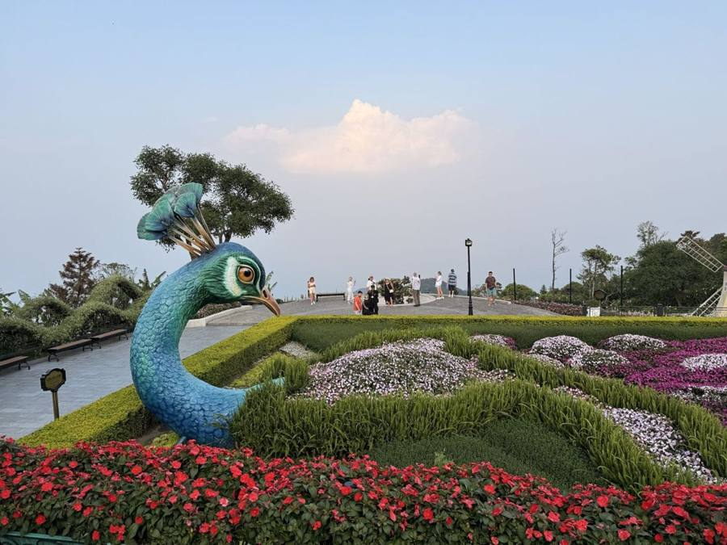
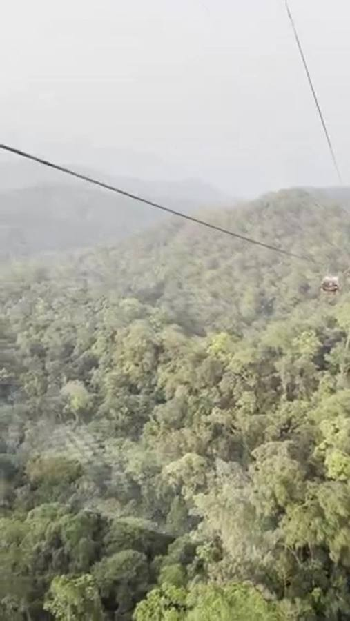
Ba Na Hills & Goldene Brücke, privat am frühen Morgen6–7 Std.59 $Bà Nà entstand 1919 als französische Bergstation; heute bringt eine fast 5,8 Kilometer lange Seilbahn die Besucher über bewaldete Hänge hinauf ins Gipfelgebiet. Am ruhigsten ist die Goldene Brücke in den ersten Stunden des Tages, bevor die meisten Gäste oben angekommen sind, und das Morgenlicht fällt dann weich auf die beiden steinfarbenen Hände.
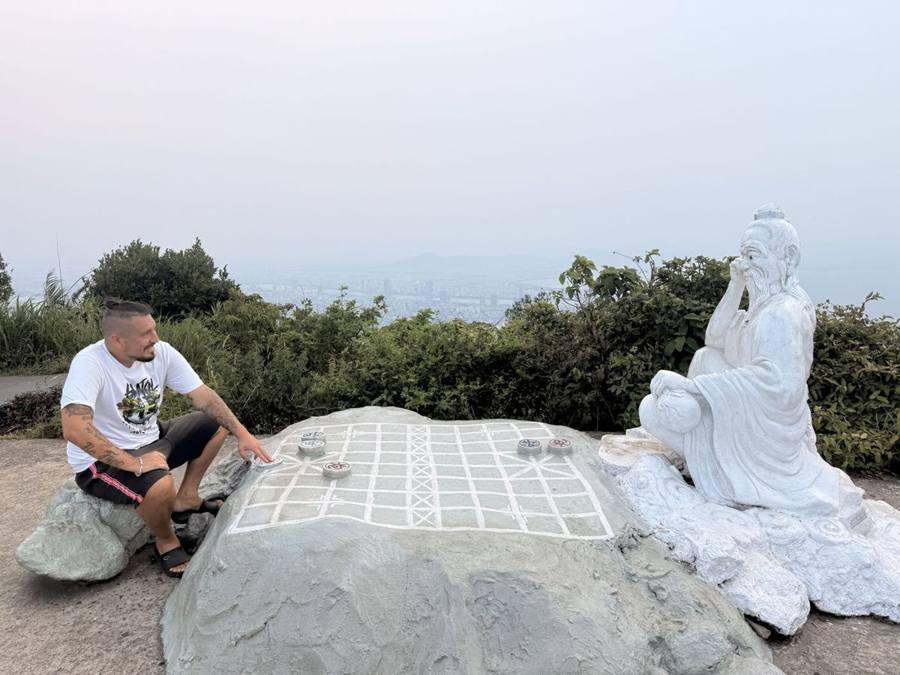
Marmorberge, Am-Phu-Höhle & Affenberg, Kleingruppe5 Std.22 $Die Marmorberge sind fünf Felshügel südlich von Đà Nẵng, jeder nach einem der fünf Elemente benannt. Im Inneren des Thủy Sơn zeigt die Âm-Phủ-Höhle eine buddhistische Vorstellung der Hölle mit Dämonen und einer Waage für gute und schlechte Taten, bevor eine steile Treppe ans Tageslicht führt. Nördlich der Stadt leben auf dem Sơn Trà, dem Affenberg, seltene Rotschenklige Kleideraffen.
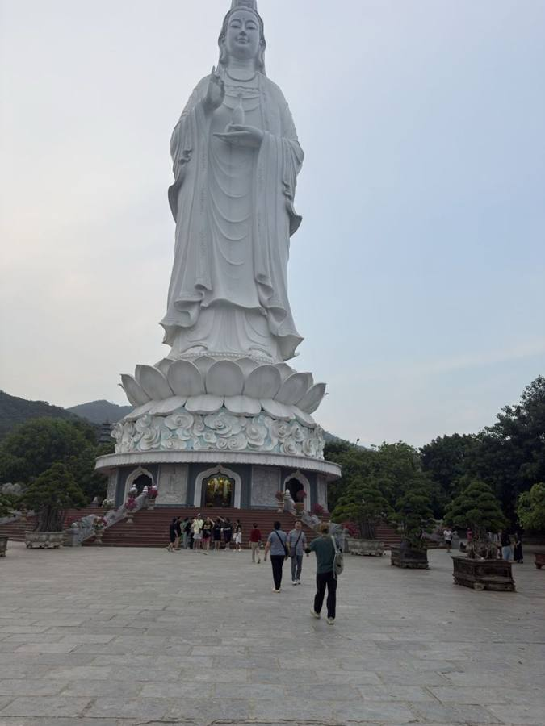
Marmorberge, Affenberg & Lady Buddha, privat4–6 Std.68 $Auf dem Thủy Sơn, dem einzigen der Marmorberge, der für Besucher zugänglich ist, führen Steinstufen an Pagoden und Höhlenschreinen vorbei zu Aussichtspunkten über die Küste. Auf der Halbinsel Sơn Trà steht die weiße Lady Buddha der Linh-Ứng-Pagode, 67 Meter hoch und dem Meer zugewandt; bei klarem Wetter erkennt ihr die Statue schon vom Strand Mỹ Khê aus.
Đà Nẵng liegt zwischen dem Han-Fluss und dem Meer: Brücken, Uferpromenade und breite Strände sind nur ein kurzes Stück voneinander entfernt. Der Han-Markt steht an der Trần-Phú-Straße nahe dem Fluss – unten gibt es Lebensmittel, Kaffee und kandierte Früchte, oben Stoffe und Kleidung. Das 1915 gegründete Museum für Cham-Skulptur bewahrt Sandsteinfiguren aus dem alten Königreich Champa.
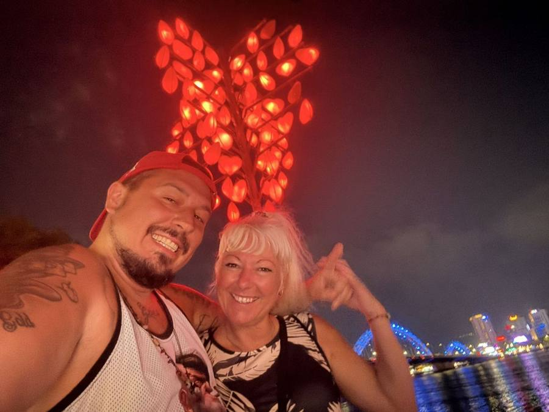
Love Bridge & Feuer- und Wassershow an der Drachenbrücke, Fr–So 21 Uhr10 €Die Drachenbrücke überspannt den Han-Fluss als 666 Meter langer Drache aus Stahl, an dessen geschwungenem Körper sechs Fahrspuren entlangführen. Sie wurde 2013 eröffnet und ist nach Einbruch der Dunkelheit beleuchtet; an den Wochenendabenden speit der Drachenkopf erst Feuer und dann Wasser. Zugeschaut wird von der Brücke aus und von beiden Ufern. Gleich daneben liegt die Love Bridge mit ihren roten Herzlaternen am Ufer des Han-Flusses. Wir bringen euch zu beidem, für 10 € pro Person.
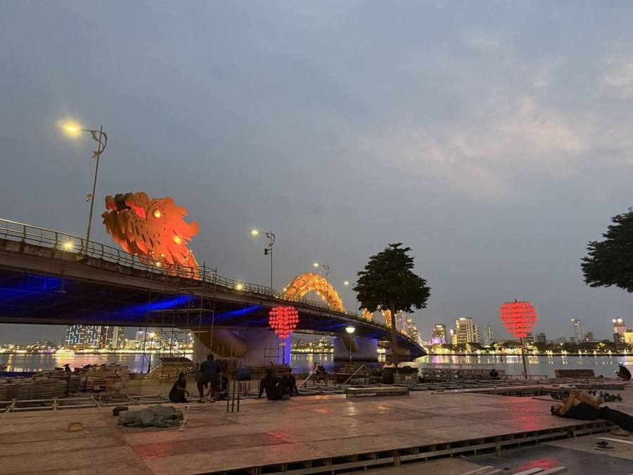
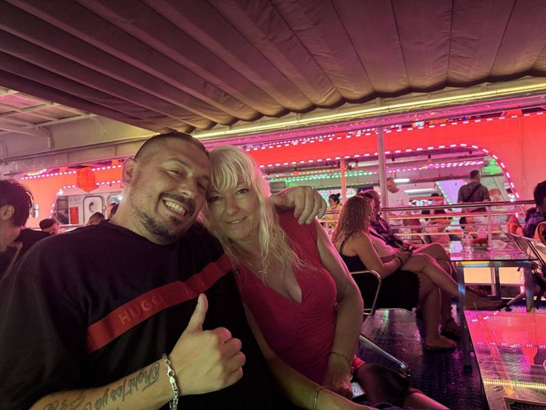
Abendfahrt auf dem Han-Fluss & Drachenbrücken-Show1–2 Std.22 $Nach Einbruch der Dunkelheit wird der Han-Fluss zum Schaufenster der Stadt: Vom Wasser aus sind vier beleuchtete Brücken zu sehen, darunter die Drehbrücke aus den späten 1990er-Jahren und die 666 Meter lange Drachenbrücke. Vom Boot aus ziehen die erleuchteten Promenaden und die Skyline an beiden Ufern vorbei, und an den Wochenendabenden speit der Drachenkopf Feuer und Wasser.
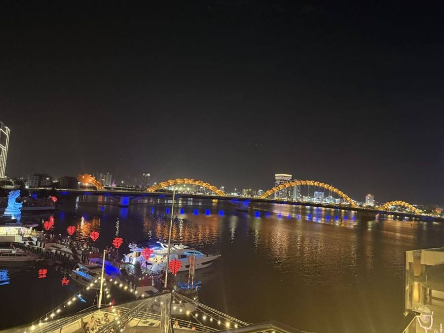
Die Bahnstrecke zwischen Đà Nẵng und Huế schmiegt sich rund um das Hải-Vân-Massiv an die Küste und führt durch eine Reihe von Tunneln – auf der einen Seite bewaldete Berge, auf der anderen das Meer. Seit März 2024 fährt ein Touristenzug, der etwa drei Stunden braucht und einen Gemeinschaftswagen hat, in dem Volkslieder aus Huế gesungen werden.
Der Hải-Vân-Pass windet sich rund 21 Kilometer über einen Bergausläufer zwischen Đà Nẵng und Huế und erreicht an seiner höchsten Stelle 496 Meter. Sein Name bedeutet Meereswolkenpass – nach dem Dunst, der vom Meer aufsteigt. Seit 2005 ein Straßentunnel eröffnet wurde, rollt der meiste Durchgangsverkehr unter dem Berg hindurch, und die alte Serpentinenstraße gehört vor allem Motorradfahrern und Ausflüglern.
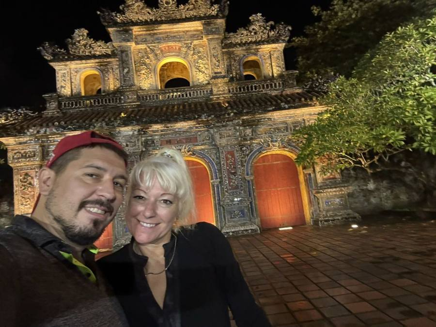
Tagesausflug zur Kaiserstadt Huế über den Hai-Van-Pass9–10 Std.38 $Huế war Sitz der Nguyễn-Kaiser, und die Kaiserstadt, 1804 unter Gia Long begonnen, liegt hinter einem Wassergraben und einer rund 2,5 Kilometer langen Mauer. Durch das Ngọ-Môn-Tor von 1833 geht es hinein, weiter zu Thronhallen und zur teilweise wiederaufgebauten Purpurnen Verbotenen Stadt. Die Straße von Đà Nẵng führt über den Hải-Vân-Pass, 496 Meter über dem Meer.
Die Zitadelle von Huế blickt auf den Parfümfluss, ihre äußeren Wälle ziehen sich fast zehn Kilometer um die Altstadt; darin liegt die ummauerte Kaiserstadt, seit 1993 UNESCO-Welterbe. Vieles wurde bei den Kämpfen von 1968 zerstört, die Restaurierung dauert bis heute an. Die Bahnlinie von Đà Nẵng folgt der Küste rund um das Hải-Vân-Massiv, das Meer direkt neben dem Gleis.
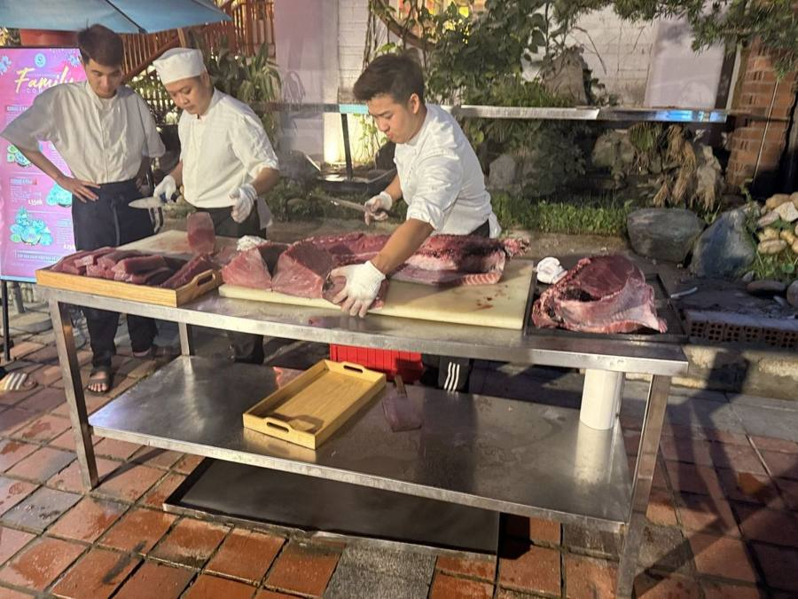
Streetfood-Tour per Motorrad in Đà Nẵng4 Std.45 $Die Küche von Đà Nẵng ist zentralvietnamesisch: mì Quảng, breite, mit Kurkuma gelb gefärbte Nudeln mit nur wenig kräftiger Brühe, Erdnüssen und geröstetem Reiscracker, oder bún chả cá, eine Reisnudelsuppe mit gebratenem Fischkuchen. Vieles davon gibt es in kleinen Straßenküchen, die sich auf ein einziges Gericht spezialisiert haben und in Vierteln weit weg von den Strandhotels liegen.
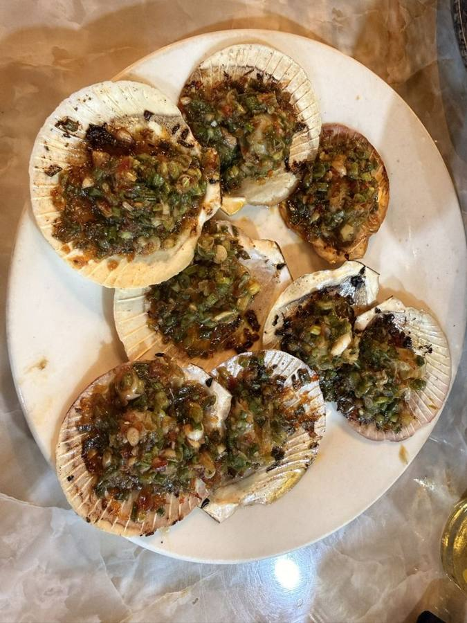
In den Straßen rund um den Han-Markt und den Cồn-Markt wird überall gekocht: Bánh xèo, knusprige gelbe Pfannkuchen mit Garnelen, Schweinefleisch und Sojasprossen, werden zerteilt und mit Kräutern in Reispapier gerollt, und nem lụi, auf Zitronengrasstängeln gegrilltes Schweinehack, isst man genauso. Die Stände öffnen und schließen je nach Tageszeit – morgens schmeckt die Stadt anders als abends.
Nach Sonnenuntergang verändert sich Đà Nẵng: Die Brücken über den Han-Fluss leuchten, Familien sitzen an der Promenade, und in den Straßenküchen werden die Holzkohlegrills angefacht. Der Abend ist die Zeit für bánh xèo und nem lụi – und für bánh tráng cuốn thịt heo, gekochtes Schweinefleisch, das mit Kräutern in Reispapier gerollt und in würziges mắm nêm getunkt wird.
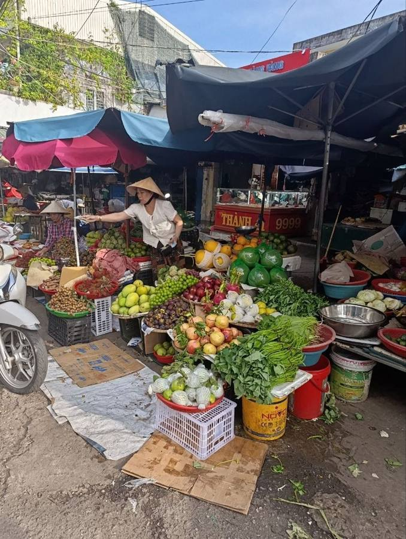
Kochkurs in Đà Nẵng mit Marktbesuch4 Std.39 $Die zentralvietnamesische Küche beginnt auf dem Markt: Bündel frischer Kräuter, Reispapier, Kurkuma, Fisch von der nahen Küste und die fermentierten Saucen, die den Gerichten ihre Tiefe geben. Lokale Klassiker wie mì Quảng oder bánh xèo brauchen wenige Handgriffe, aber ein genaues Gleichgewicht aus sauer, salzig, süß und scharf – deshalb lernt man sie am besten mit den eigenen Händen.
Drei sehr unterschiedliche Seiten von Đà Nẵng: die Goldene Brücke in den kühlen Bà Nà Hills, zu der eine fast 5,8 Kilometer lange Seilbahn hinaufführt; die Marmorberge, fünf felsige Hügel mit Höhlenschreinen und Pagoden nahe der Küste; und die Drachenbrücke, ein 666 Meter langer Stahldrache über dem Han-Fluss mitten in der Stadt.
Đà Nẵng ist eine moderne Hafenstadt mit Brücken und langen Stränden; Hội An, weiter südlich, ist das Gegenstück dazu. Die Altstadt von Hội An war vom 15. bis zum 19. Jahrhundert ein Handelshafen und gehört seit 1999 zum UNESCO-Welterbe. In den engen Gassen sind mehr als 1.100 Holzfachwerkbauten erhalten, darunter die überdachte Japanische Brücke.
Kreuzfahrtschiffe legen hier in zwei Häfen an. Tiên Sa liegt auf der Halbinsel Sơn Trà, etwa 10 Kilometer vom Zentrum Đà Nẵngs entfernt; weiter südlich folgen die Marmorberge und Hội An. Chân Mây ist ein Tiefwasserhafen rund 45 Kilometer nördlich von Đà Nẵng und etwa 65 Kilometer von Huế entfernt, nahe der Bucht von Lăng Cô und dem Hải-Vân-Pass.
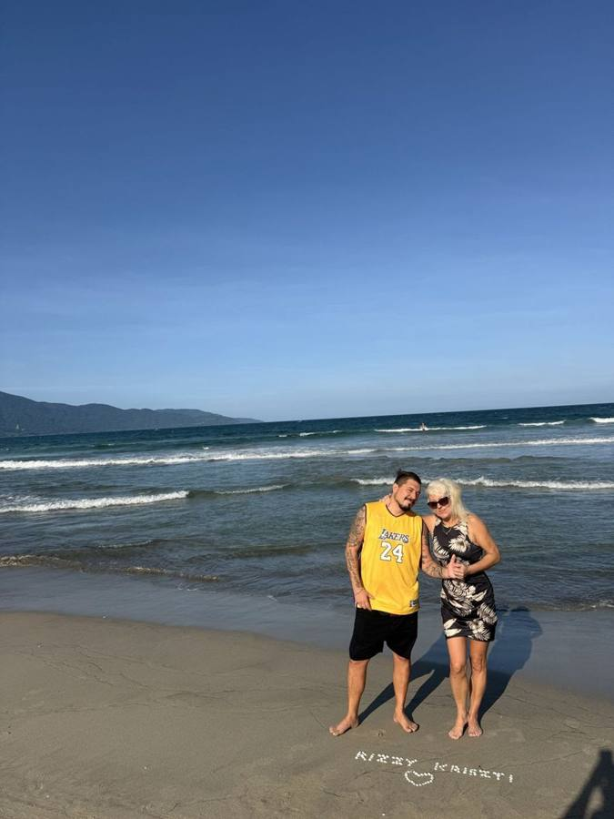
Strandausflug Mỹ KhêAuf AnfrageMỹ Khê ist der Stadtstrand von Đà Nẵng: ein breiter Streifen hellen Sandes, der flach ins Meer abfällt, wenige Minuten vom Zentrum. Einheimische schwimmen und turnen hier im Morgengrauen und kommen am späten Nachmittag wieder. Im Norden begrenzt die Halbinsel Sơn Trà die Bucht, am Hang die 67 Meter hohe Lady Buddha. US-Soldaten kannten die Küste als China Beach.
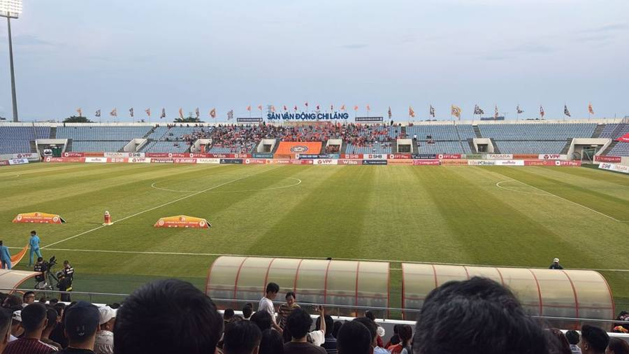
Stadionbesuch in Đà Nẵng: Spiel der V.League 1Auf AnfrageSHB Đà Nẵng spielt in der Saison 2026/27 in der V.League 1, der höchsten Fußballliga Vietnams. Heimstätte ist das Chi-Lăng-Stadion im Stadtteil Hòa Xuân, eine Arena mit 20.000 Plätzen, die bis Ende 2025 Hòa-Xuân-Stadion hieß und dann den Namen des früheren Vereinsstadions im Zentrum übernahm. Auf den Rängen sitzen vor allem Einheimische – ein Spiel zeigt den Fußballalltag in Zentralvietnam.
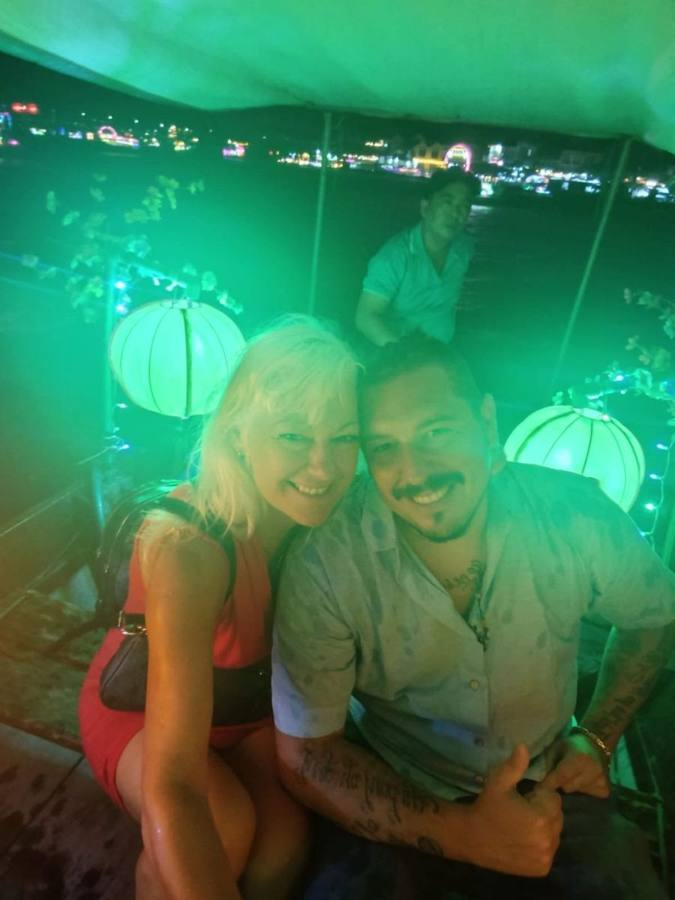
Romantische Laternenbootfahrt mit Wunschlaterne auf dem Wasser20 min8 $Nach Einbruch der Dunkelheit füllt sich der Hoài-Fluss am Rand der Altstadt von Hội An mit kleinen, von Hand geruderten Holzbooten, an denen Laternen hängen. Vom Wasser aus seht ihr die beleuchteten Häuser am Ufer. Papierlaternen in Lotusform mit einer Kerze setzt man hier traditionell aufs Wasser, um der Ahnen zu gedenken und sich Gesundheit und Glück zu wünschen.
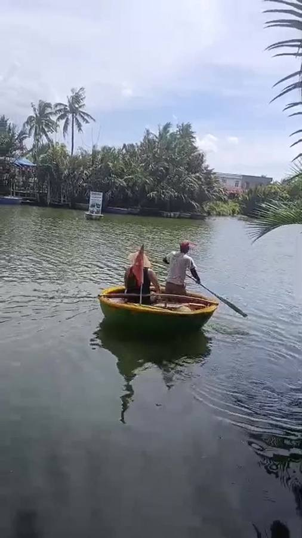
Korbbootfahrt im Kokoswald1–2 Std.12 $Der Kokoswald Bảy Mẫu liegt in Cẩm Thanh, rund 3 km von der Altstadt von Hội An, nahe der Mündung des Thu Bồn. In runden, aus Bambus geflochtenen Korbbooten paddelt man durch schmale Kanäle zwischen Nipapalmen, und die Ruderer lassen das Boot gern auf der Stelle kreisen. Der Name erinnert an die ursprüngliche Größe: sieben mẫu, ein altes Flächenmaß.
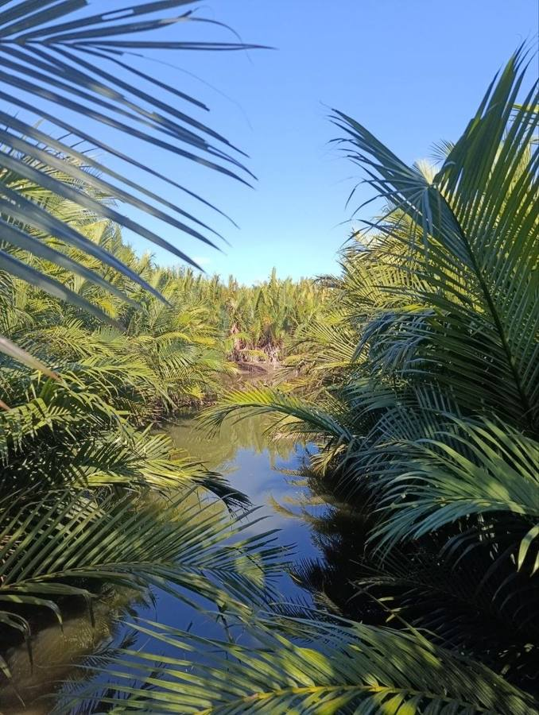
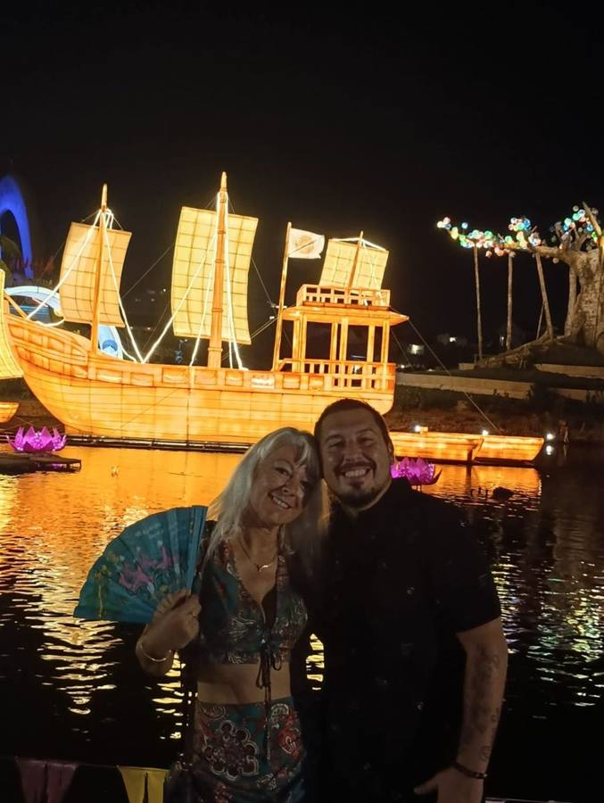
Ticket Hoi An Memories Show1–4 Std.25 $Die Hội An Memories Show wird unter freiem Himmel im Hội An Memories Land gespielt, einem Kulturpark auf einer Flussinsel gleich südlich der Altstadt. Rund 500 Darstellerinnen und Darsteller bespielen eine etwa 25.000 m² große Bühne und erzählen ohne gesprochene Dialoge, wie aus einem Bauerndorf ein Handelshafen wurde. Premiere war 2018.
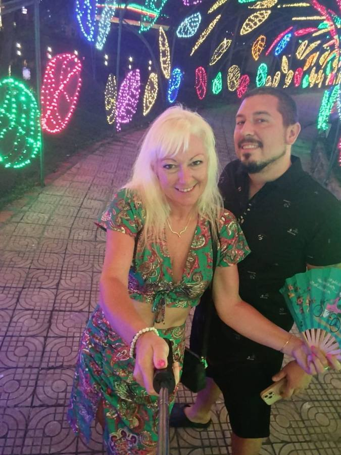
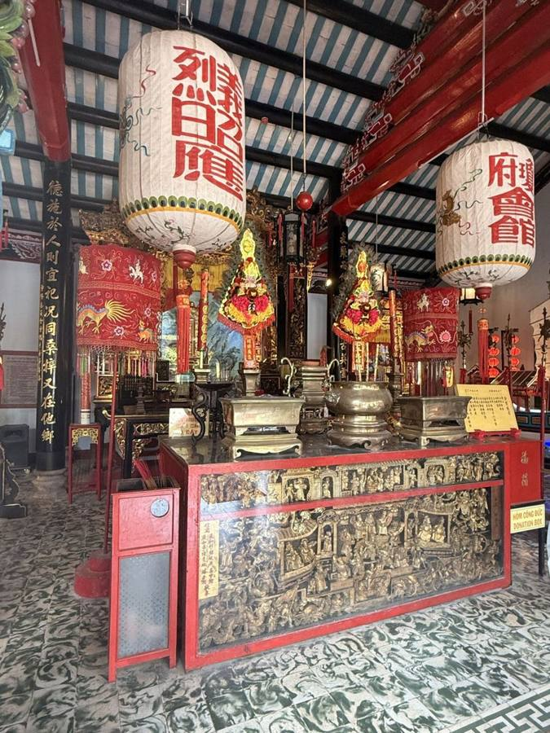
Versteckte Orte der Altstadt von Hội An, Food- & Kulturrundgang3–4 Std.45 $Die Altstadt von Hội An war vom 15. bis zum 19. Jahrhundert ein Handelshafen; die UNESCO zählt auf nur 30 Hektar 1.107 Gebäude in Holzrahmenbauweise. Abseits der Hauptstraßen findet ihr schmale Gassen, Familienkapellen und alte Brunnen. Hierher gehört auch das Nudelgericht cao lầu, dessen Wasser der Legende nach aus dem alten Bá-Lễ-Brunnen stammen muss.
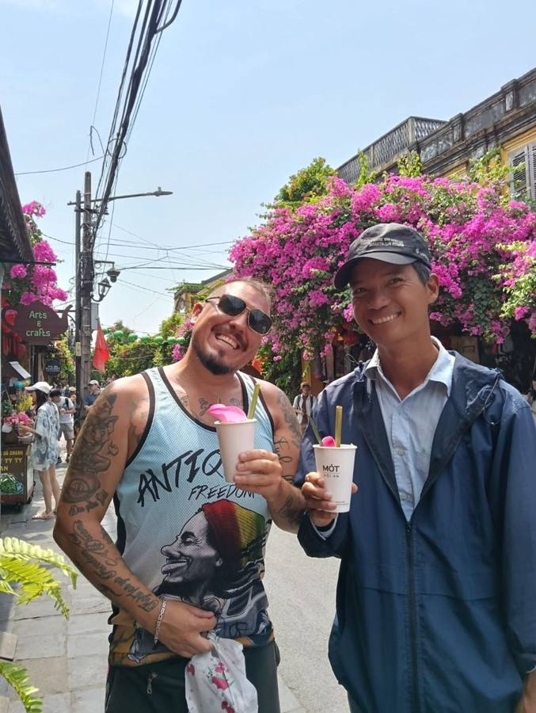
Mỹ Sơn liegt in einem von Bergen umschlossenen Talkessel, in dem die Könige von Champa zwischen dem 4. und 13. Jahrhundert hinduistische Tempel errichteten. Früh am Tag ist es kühler und ruhiger, und das flache Licht hebt die Reliefs im roten Ziegel hervor. Der Thu Bồn entspringt hier und mündet bei Hội An ins Meer – einst der Weg zur Küste.
Rund 36 km von Hội An entfernt liegt Mỹ Sơn, das wichtigste Heiligtum des Champa-Reichs und seit 1999 UNESCO-Welterbe. Die 71 Bauwerke stehen in acht Gruppen; die meisten sind Ziegeltürme mit Sandsteinreliefs, die vor allem Shiva geweiht waren. Daneben seht ihr Bombenkrater von 1969, und wie die Ziegel verbunden wurden, ist bis heute nicht ganz geklärt.
Kochen in Hội An beginnt mit dem, was Markt und Fluss hergeben: frische Kräuter, Reisnudeln, Fisch und Schalentiere. In den Wasserläufen von Cẩm Thanh, rund 3 km von der Altstadt, gleiten runde Korbboote aus Bambus zwischen Nipapalmen hindurch, und kleine Krabben lockt man mit einem Köder an der Bambusrute aus den Wurzeln. Dieselben Zutaten landen später in der Pfanne.
Ein offener Markt am Fluss gehört seit den Jahrhunderten als Handelshafen zu Hội An; die UNESCO nennt ihn ausdrücklich als Teil der Altstadt. An seinen Ständen beginnt die lokale Küche, mit Kräutern, Reisnudeln und frischem Fisch. Gerichte wie cao lầu, dessen bissfeste Nudeln aus in Lauge eingeweichtem Reis entstehen, findet man außerhalb der Gegend kaum.
Laternen werden in Hội An seit mehr als 400 Jahren gebaut. Am Anfang steht ein Gerüst aus Bambusstreifen, die zum Schutz vor Termiten in Salzwasser eingelegt werden; darüber wird feine Seide gespannt und Bahn für Bahn verklebt. Die Form des Gerüsts und die Farbe des Stoffs bestimmen, wie weich das Licht am Ende leuchtet.
In Hội An gibt es zwei Arten von Laternen. Die seidenen, über ein Bambusgerüst gespannt, hängen in Reihen über den Straßen und an den Booten; die aus Papier, wie eine Lotusblüte um eine Kerze gefaltet, setzt man auf den Hoài-Fluss. Seit 1999 feiert die Stadt am 14. Tag jedes Mondmonats ein Laternenfest, und vom Fluss aus seht ihr beide.
Die Küche von Hội An ist aus der Vergangenheit als Hafenstadt gewachsen, und einige Gerichte sind eng mit dem Ort verbunden. Cao lầu vereint bissfeste, gelbliche Reisnudeln mit Schweinefleisch, Blattgemüse, Sojasprossen und nur wenig Brühe; mì Quảng ist das zweite Nudelgericht, das an den Marktständen verkauft wird. Gegessen wird oft auf niedrigen Hockern an Straßenecken und auf dem Markt.
In der Altstadt stehen alte Kaufmannshäuser, chinesische Versammlungshallen und die hölzerne Japanische Brücke, nur etwa 10 Meter lang, an Straßen, deren Verlauf sich seit der Handelszeit kaum verändert hat. Jenseits des Hoài-Flusses, auf der Insel An Hội, füllt der Nachtmarkt rund 300 Meter der Nguyễn-Hoàng-Straße mit Essens- und Laternenständen.
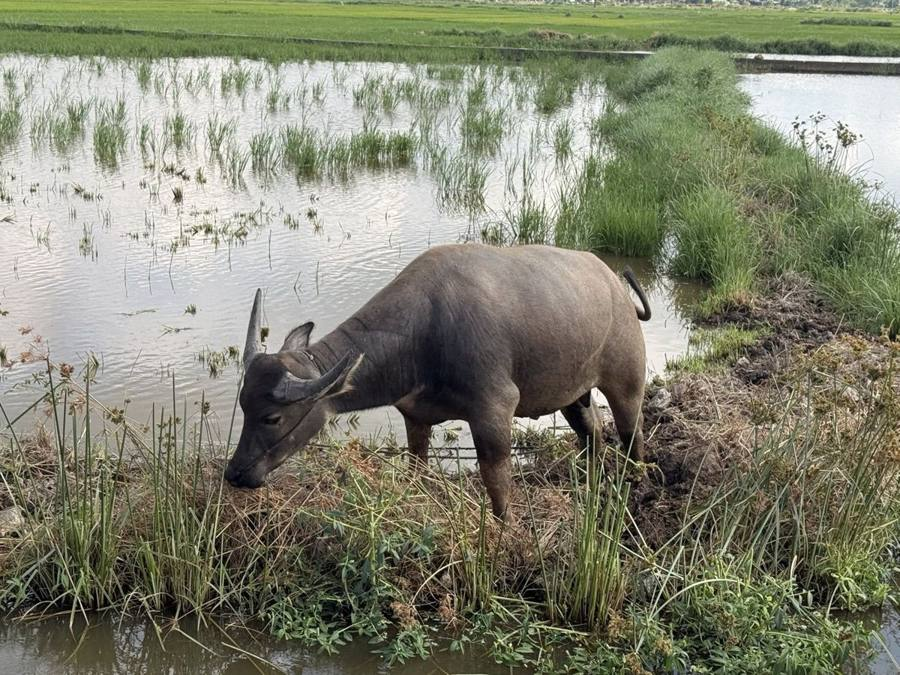
Radtour durchs Umland5 Std.30 $Das Land um Hội An ist flaches Deltagebiet, das sich auf schmalen Wegen zwischen Reisfeldern und Gemüsegärten gut mit dem Rad erkunden lässt. Auf der Flussinsel Cẩm Kim bearbeiten die Zimmerleute von Kim Bồng seit rund 500 Jahren Holz; früher bauten sie Boote für die Händler. Bis heute wird hier Seggengras angebaut und zu Schlafmatten gewebt.
Trà Quế liegt rund 3 km von der Altstadt von Hội An am Fluss Cổ Cò; seit fast 400 Jahren bauen Familien hier Gemüse an. Auf etwa 40 Hektar wachsen mehr als 20 Sorten Blattgemüse und Kräuter, gedüngt mit Wasserpflanzen aus dem Fluss. Das Gericht des Dorfes heißt tam hữu, eine kleine Rolle aus Garnele, Schweinefleisch und Basilikum.
Wenige Kilometer hinter der Altstadt von Hội An wechselt die Landschaft schnell: Reisfelder, die Kräuterbeete von Trà Quế, dann die Nipapalmen von Cẩm Thanh, wo der Thu Bồn ins Meer mündet. Im offenen Jeep geht es in gemächlichem Tempo über Nebenstraßen und Dämme, nah genug, um den Bauern bei der Arbeit auf den Feldern zuzusehen.
Jenseits der Altstadt ist das untere Delta des Thu Bồn ein Flickenteppich aus Reisfeldern, sandigen Pisten, kleinen Dörfern und Flussarmen. Ein Quad kommt mit den Feldwegen und schlammigen Abschnitten zurecht, die normale Fahrzeuge meiden, sodass ihr das bewirtschaftete Land seht statt nur den Straßenrand. Die Altstadt selbst misst gerade 30 Hektar – hier liegt die viel größere Landschaft drumherum.
Zwei Seiten von Hội An liegen etwa 3 km auseinander. In Cẩm Thanh boten dichte Nipapalmen und schmale Wasserarme einst Widerstandskämpfern Schutz; heute fährt man mit dem runden Korbboot hindurch. In der Altstadt, vom 15. bis 19. Jahrhundert Handelshafen und seit 1999 Welterbe, säumen hölzerne Kaufmannshäuser und Versammlungshallen den Hoài-Fluss.
Vietnam ist der zweitgrößte Kaffeeproduzent der Welt, und rund 97 Prozent der Ernte sind Robusta, dunkel und kräftig. Gebrüht wird langsam durch einen kleinen Metallfilter, den Phin, Tasse für Tasse, und gesüßt meist mit Kondensmilch. Die Regionen haben eigene Varianten: Eierkaffee stammt aus Hanoi, Salzkaffee aus Huế.
Der Reisanbau rund um Hội An hing lange vom Wasserbüffel ab, der den Pflug durch die gefluteten Felder zog und noch heute an den Feldrändern grast. Nicht weit davon, in Cẩm Thanh, gleiten runde Korbboote aus Bambus durch die Wasserarme zwischen Nipapalmen nahe der Mündung des Thu Bồn. Feld, Fluss und Küche hängen hier eng zusammen.
Südlich der Altstadt von Hội An führt eine Fährfahrt von fünf bis zehn Minuten nach Cẩm Kim, einer der größten Inseln im Thu Bồn. Das Leben ist ländlich: Reisfelder, Lotusteiche und Haushalte, die Reispapier und Nudeln noch von Hand herstellen. Einige Handwerker bauen Korbboote aus Bambus, und die meisten Mattenweber von Hội An leben auf der Insel.
Cù Lao Chàm ist eine Gruppe von acht Inseln rund 16 km vor der Küste bei Hội An, die die UNESCO 2009 als Biosphärenreservat anerkannt hat. In den umliegenden Gewässern wurden etwa 135 Korallenarten nachgewiesen, weshalb die Riffe das Hauptziel zum Schnorcheln sind. Auf der größten Insel, Hòn Lao, liegen zwei Fischerdörfer; Besucher sollen keine Plastiktüten mitbringen.
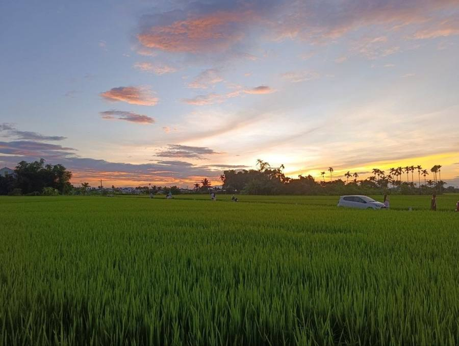
Reisfelder, Entenfarm & Restaurant mit Live-Musik zum SonnenuntergangAuf AnfrageEin Nachmittag im Grünen bei Hội An. Wir fahren mit euch durch die Reisfelder, vorbei an Wasserbüffeln und kleinen Wegen, auf die kein Tourbus passt. Auf der Funny Duck Stop Farm, die Freunden von uns gehört, könnt ihr Entenküken auf die Hand nehmen, angeln und im runden Korbboot paddeln. Zum Sonnenuntergang sitzen wir in einem Restaurant direkt am Reisfeld, mit Live-Musik und Blick auf den Himmel.
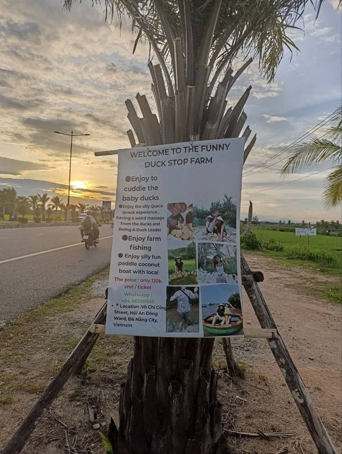
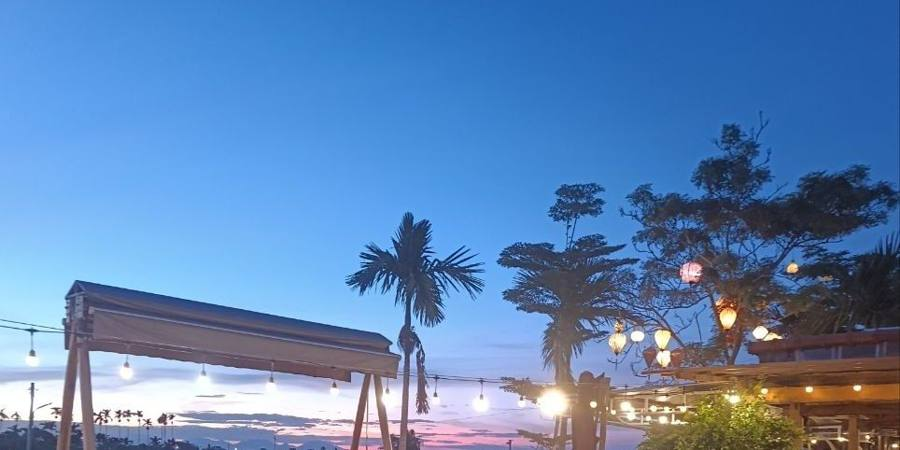
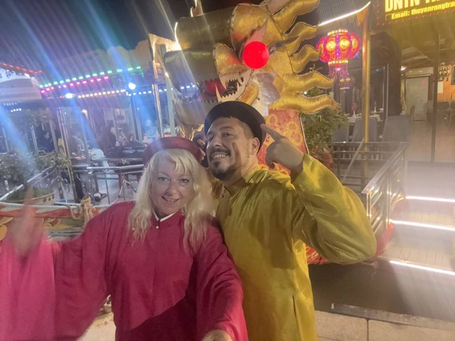
Drachenboot-Dinnerfahrt mit Königsgewändern & Ca-Huế-Musik2 Std.18 $Die Drachenboote von Huế tragen einen bemalten Drachenkopf am Bug und gleiten abends gemächlich über den Parfümfluss. An Bord erklingt Ca Huế, eine Kammermusik, die einst für Hof und Adel gespielt wurde und seit 2015 zum nationalen immateriellen Kulturerbe Vietnams zählt. Wer dazu in Gewänder im Stil der Nguyễn-Dynastie schlüpft, sitzt beim Abendessen wie an einer kleinen Hoftafel.
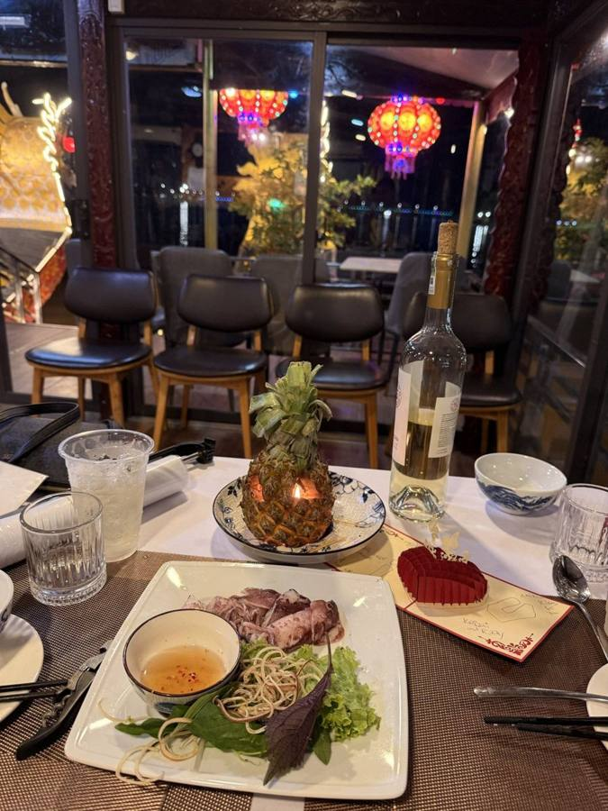
Zwischen Huế und Đà Nẵng folgt die Bahn der Küste: Rund um das Hải-Vân-Massiv führt sie durch eine Reihe von Tunneln, das Meer liegt direkt unter dem Fenster. Davor passiert sie Lăng Cô, wo hinter einem langen Sandstrand eine Lagune liegt. Der Touristenzug auf dieser Strecke fährt seit März 2024 und hat einen Wagen im Stil Zentralvietnams. Auf unserer Fahrt gab es Live-Musik an Bord.
Nach Sonnenuntergang wird der Parfümfluss dunkel und still, und die Lichter der Stadt übernehmen. Blickfang auf dem Wasser ist die Trường-Tiền-Brücke: Ihre sechs Stahlbögen überspannen 403 Meter und leuchten seit 2002 in wechselnden Farben. Zum Essen erklingen Volkslieder aus Zentralvietnam, begleitet von wenigen traditionellen Instrumenten, während die Ufer langsam vorbeiziehen.
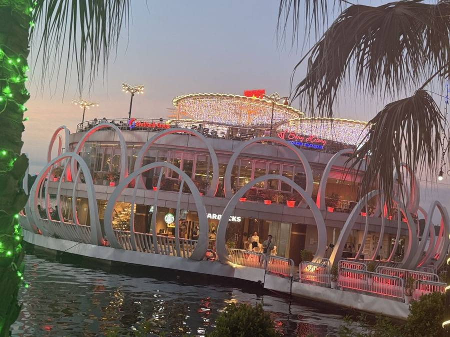
Der Parfümfluss fließt rund 30 Kilometer von der Gabelung Bằng Lãng bis zur Mündung bei Thuận An; sein Name geht auf Blüten aus Obstgärten zurück, die im Herbst ins Wasser fallen. Am Nachmittag wirkt er besonders ruhig: grüne Ufer, der Flaggenturm der Zitadelle am Nordufer und der 105 Meter hohe Ngự Bình. Eine Tasse Tee an Deck passt dazu.
Vom Drachenboot aus reiht sich Huế am Wasser auf: die Zitadelle am Nordufer, weiter flussaufwärts Gärten und Dörfer. Bekanntester Anlegepunkt ist die Thiên-Mụ-Pagode, 1601 auf einem Hügel über dem Fluss gegründet. Ihr achteckiger Ziegelturm mit sieben Stockwerken kam 1844 hinzu, ist rund 21 Meter hoch und gilt als Wahrzeichen der Stadt.
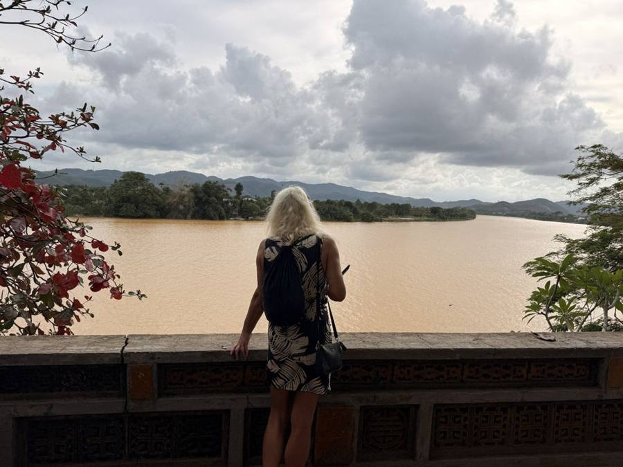
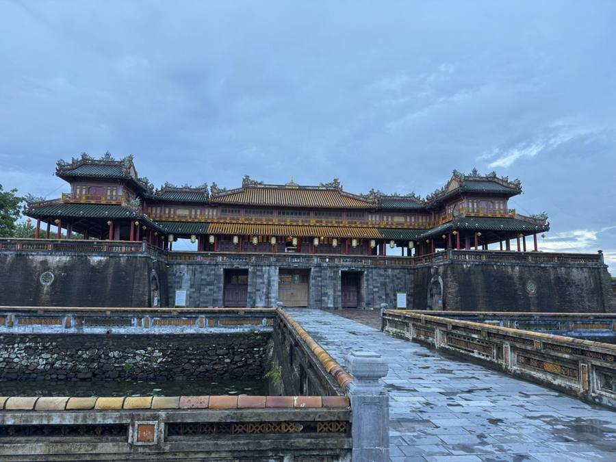
Stadttour Huế, Kleingruppe7–8 Std.32 $Von 1802 bis 1945 war Huế unter den Nguyễn-Kaisern Hauptstadt Vietnams, seit 1993 gehören seine Monumente zum UNESCO-Welterbe. Ein Tag in der Stadt verbindet die ummauerte Zitadelle, die Thiên-Mụ-Pagode am Fluss und die Kaisergräber in den Hügeln mit dem Alltag – etwa auf dem Đông-Ba-Markt, der seit 1899 an seinem heutigen Platz am Ufer steht.
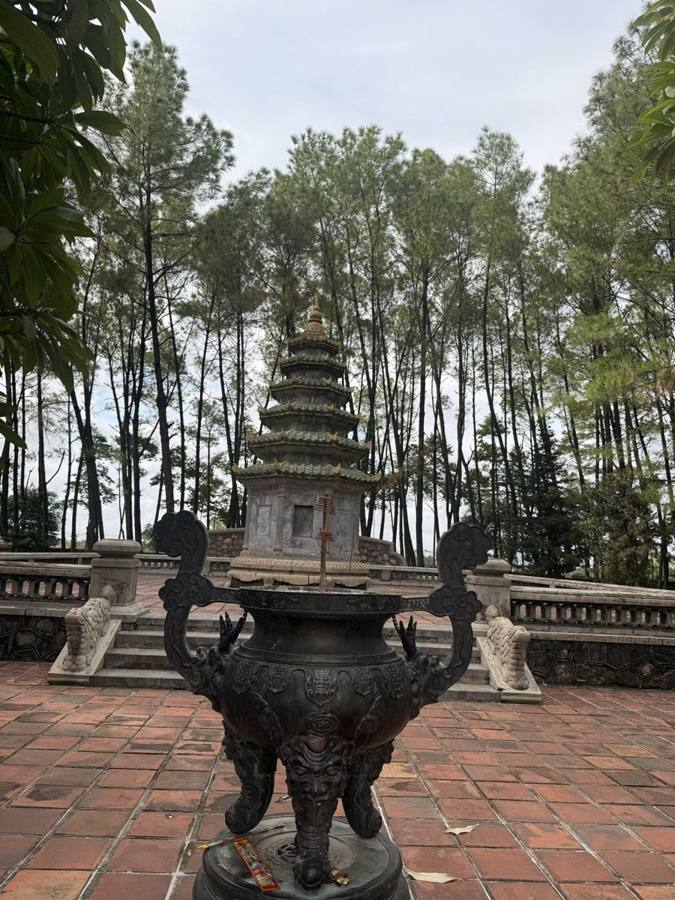
Kaiser Gia Long ließ die Zitadelle von Huế Anfang des 19. Jahrhunderts anlegen; ihre Außenmauern sind rund zehn Kilometer lang, davor liegt ein Graben mit Wasser aus dem Parfümfluss. Durch das Ngọ-Môn-Tor von 1833 gelangt ihr in die Kaiserstadt und zur Thronhalle Thái Hòa. Von der Verbotenen Purpurstadt dahinter ging vieles in den Kämpfen von 1947 und 1968 verloren.
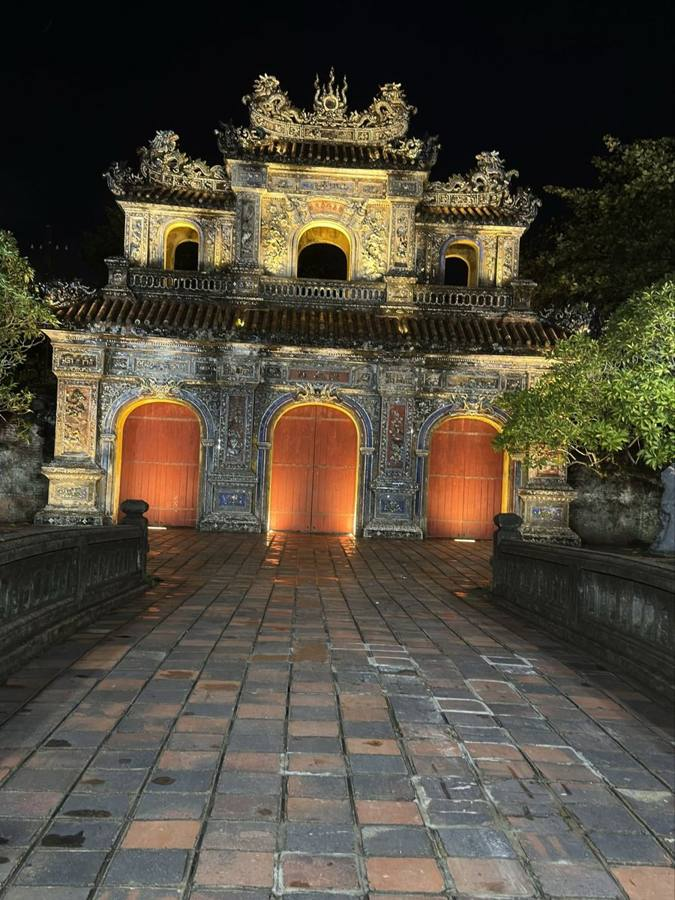
Die Gräber der Nguyễn-Kaiser sind so verschieden wie die Herrscher selbst. Bei Minh Mạng (1840–1843) reihen sich rund 40 Bauten entlang einer strengen Achse; Tự Đức nutzte seine Anlage am See schon zu Lebzeiten als Rückzugsort; das 1931 vollendete Grab von Khải Định ist aus Beton und innen mit Glas und Porzellan verkleidet. Die Thiên-Mụ-Pagode hat eine Glocke von 1710.
Von 1954 bis 1975 teilte der Fluss Bến Hải am 17. Breitengrad Vietnam; die Hiền-Lương-Brücke markierte die Linie zwischen Nord und Süd. In den Tunneln von Vĩnh Mốc suchten rund 60 Familien Schutz vor Bomben: knapp zwei Kilometer Gänge auf drei Ebenen, wo 17 Kinder zur Welt kamen. Westlich erinnert der frühere Stützpunkt Khe Sanh an die Belagerung von 1968.
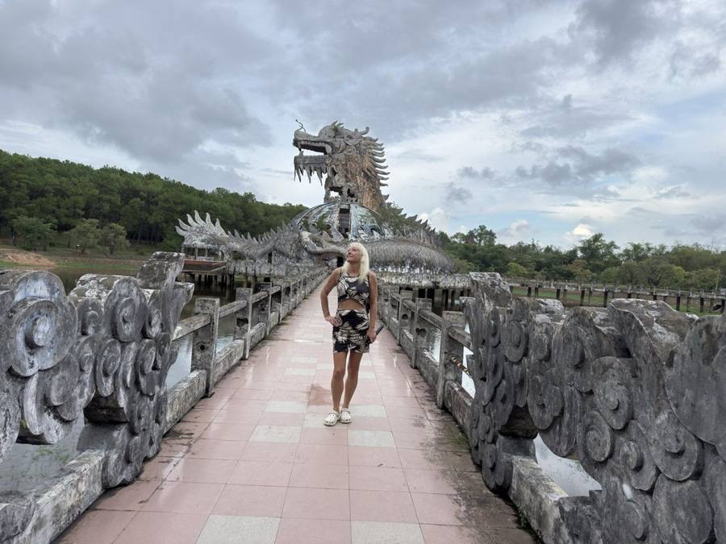
Thiên-Mụ-Pagode, Zitadelle & verlassener Wasserpark in einer Tour6 Std.Auf AnfrageDrei Orte in Huế an einem Tag. Die Thiên-Mụ-Pagode steht seit 1601 auf einem Hügel über dem Parfümfluss, ihr siebenstöckiger Turm kam 1844 dazu. In der Zitadelle regierten die Nguyễn-Kaiser bis 1945, seit 1993 gehört sie zum UNESCO-Welterbe. Zum Schluss geht es zum verlassenen Wasserpark am Thủy-Tiên-See, wo ein riesiger Drache aus Beton über dem Wasser thront. Der Park ist offiziell geschlossen. Ob man hineinkommt, kann sich ändern, das klären wir vorher für euch.
Diese Plätze haben wir selbst mit dem Motorbike entdeckt. Kein festes Programm: Sagt uns, was ihr mögt, und wir planen den Tag darum herum.
Wir empfangen euch nach der Landung und fahren euch zum Hotel. Unterwegs bekommt ihr alles, was ihr für euren Aufenthalt braucht: welche Touren sich lohnen, wo man gut isst und wo es gutes Bier gibt. Wir helfen euch auch bei SIM-Karte, Motorbike, Fahrrad und allem, was ihr sonst braucht.
Ihr braucht mehr Zeit in Vietnam? Wir fahren an jedem Tag, der euch passt. Alles ist inklusive: die Visa, alle Fahrten und alles drum herum.
Preis auf Anfrage. Nennt uns eure Staatsangehörigkeit und das Ablaufdatum eures aktuellen Visums.
Wir helfen euch beim Kauf einer lokalen SIM-Karte, damit ihr vom ersten Tag an online seid.
Wir erklären euch, wie ihr länger in Vietnam bleiben könnt.
Was wir in über einem Jahr hier gelernt haben, damit ihr nicht für dieselben Fehler zahlt.
Wo man gut isst, wo es gutes Bier, Live-Musik und Märkte gibt.
Wir zeigen euch, welche Apps ihr für Taxi, Motorbike-Fahrten, Essenslieferung und Bestellungen braucht.
Vom günstigen Homestay bis zum Fünf-Sterne-Strandresort mit Rooftop-Pool: Sagt uns, was ihr mögt, und wir schlagen passende Hotels in Đà Nẵng, Hội An, Huế und auf Phú Quốc vor.
Luxus · Mittelklasse · Günstig · Rooftop-Pool · Direkt am Strand · Am Fluss · Spa
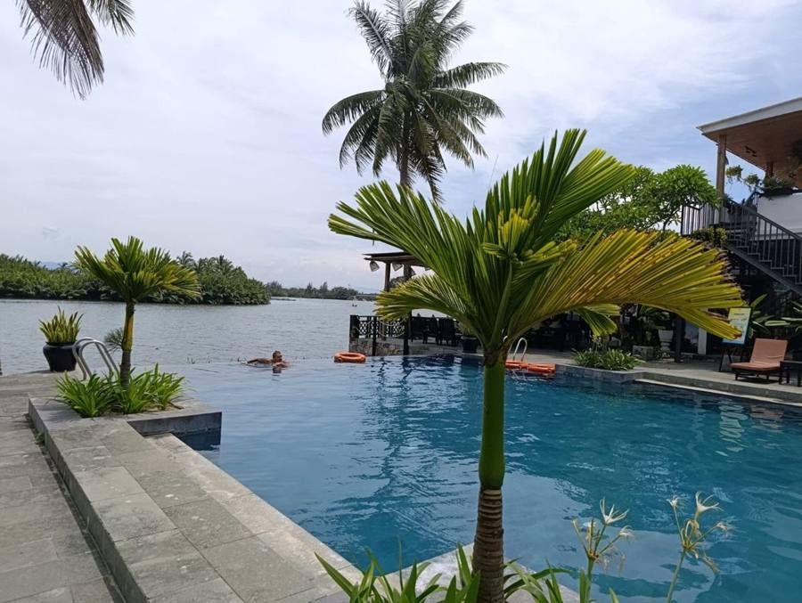
Termine, um die sich eine Reise planen lässt.
Termine nach Mondkalender sind berechnet und können um einen Tag abweichen. Das Feuerwerksfestival hat seine Termine für 2027 noch nicht bekannt gegeben.
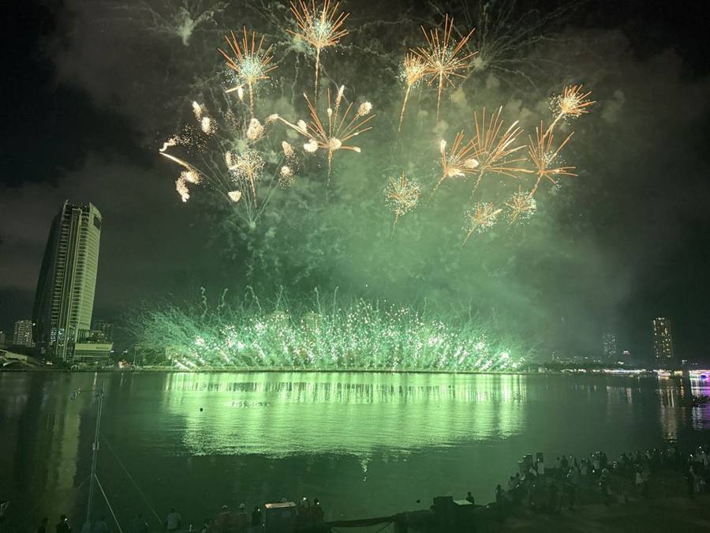
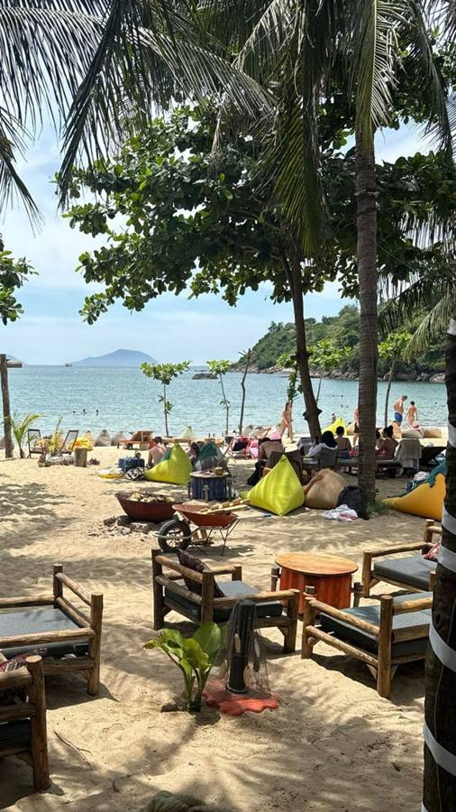
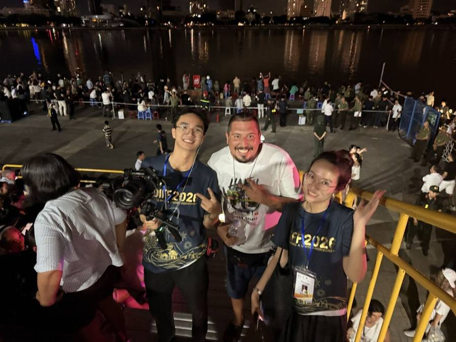
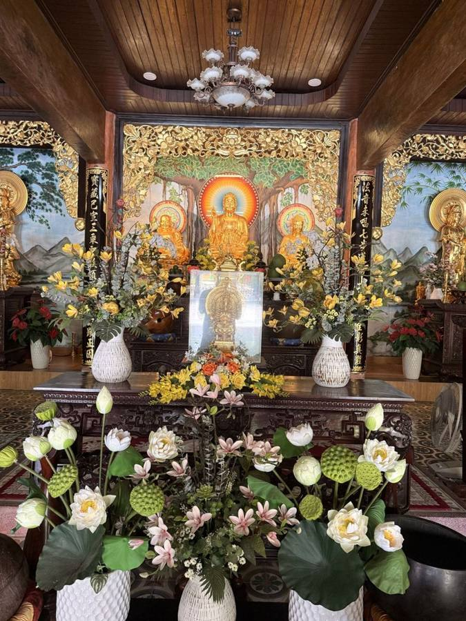
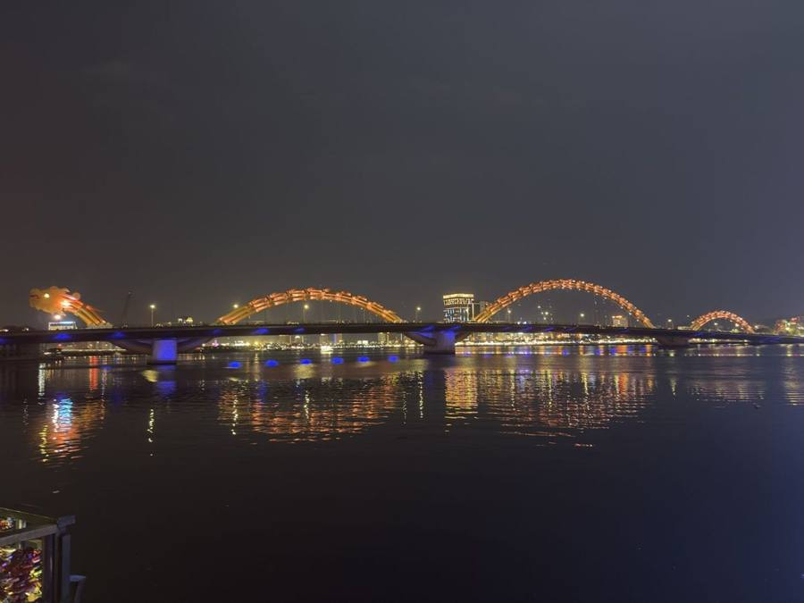
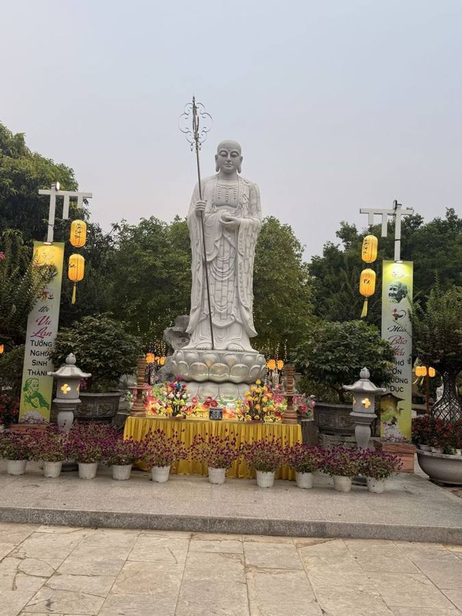
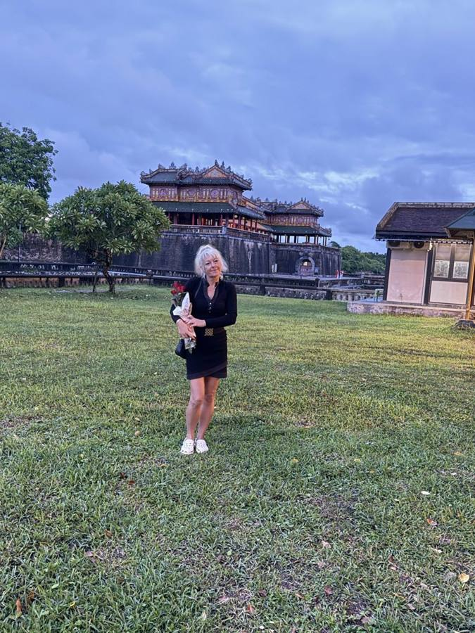
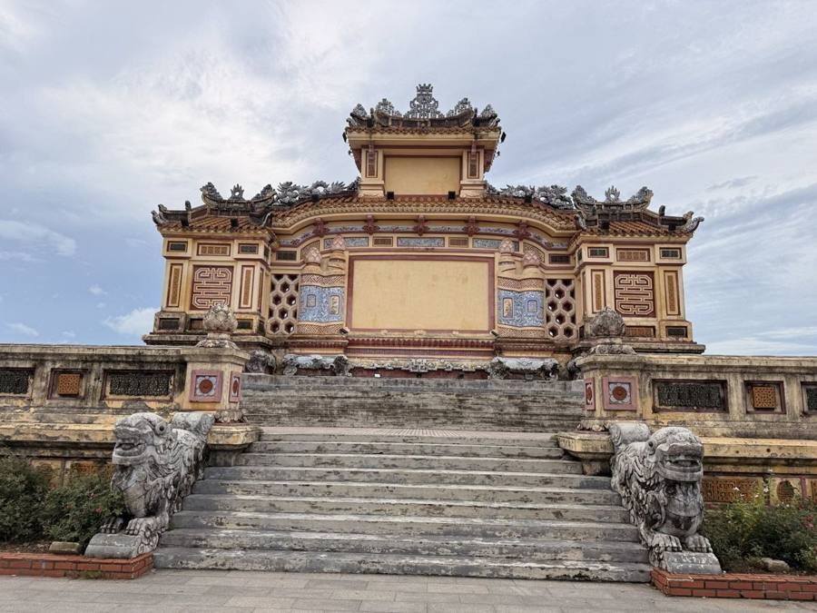
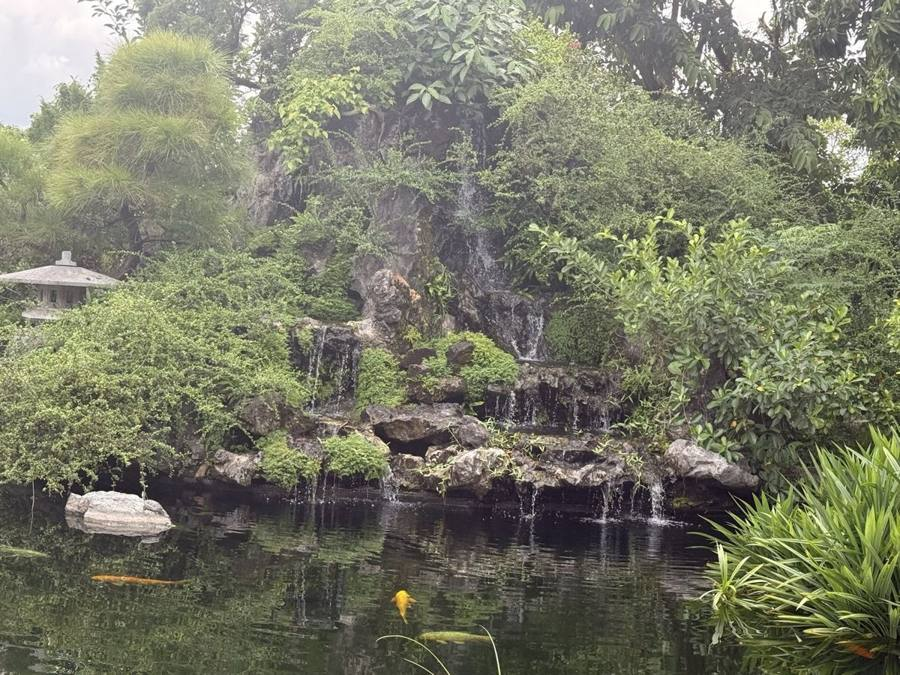
Wir sind Kriszti und Rizzy. Wir sind seit über einem Jahr in Vietnam und haben in Đà Nẵng gelebt, ebenso in Hội An, Huế und auf der Insel Phú Quốc.
In vier Ländern selbstständig: als Assistentin in Irland, mit Gartenarbeiten in Australien, mit einem eigenen Restaurant in Ungarn und mit einem Marketing-Business in Spanien. Sieben Jahre in leitender Position am Flughafen.
Viele Jahre am Flughafen, dann selbstständiger Versicherungskaufmann, danach fünf Jahre lang zwei eigene Shops: ein CBD-Shop und ein Candy-Shop.
Wir sind neu, deshalb gibt es noch keine Bewertungen. Lieber zeigen wir keine, als welche zu erfinden.
Schickt uns das Formular oder eine WhatsApp-Nachricht mit euren Reisedaten. Wir antworten mit einem Plan und einem Preis, und ihr bestätigt.
Deutsch, Englisch, Ungarisch und Spanisch.
49 € pro Person, mit drei Zielen eurer Wahl.
An den Flughäfen Đà Nẵng und Huế. Auf Phú Quốc für Gruppen auf Anfrage.
Ja. Wir organisieren den Visa-Run an jedem Tag, der euch passt, inklusive Visa und aller Fahrten.
Karte · PayPal · Revolut · Wise · Banküberweisung · Bargeld · Krypto.
Wir antworten persönlich, in eurer Sprache.
Zahlt, wie ihr wollt: Karte · PayPal · Revolut · Wise · Banküberweisung · Bargeld · Krypto